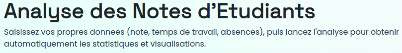
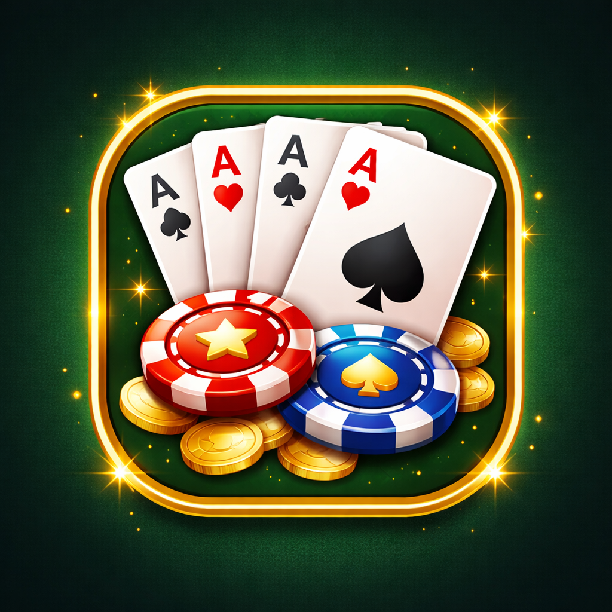

Développement · BI · Data · Support
Guidé par la curiosité, porté par la technologie.
Étudiant en Master MIAGE à l'Université Côte d'Azur, passionné par l'informatique et les nouvelles technologies, je développe des solutions numériques en combinant développement logiciel, Business Intelligence, analyse de données et support technique. À travers mes projets et expériences, j'accompagne la conception de produits numériques, de la phase d'analyse et de développement jusqu'à leur mise en production.
0projets livrés
0plateformes en ligne
0focus : data & web

01
Présentation
Je m'appelle Aziz Landoulsi. En troisième année de MIAGE, je me situe au croisement de la gestion, de la donnée et du développement, là où une bonne architecture technique rencontre une vraie utilité métier. Je préfère construire des outils qui simplifient une décision plutôt que des démonstrations techniques sans usage. Ce portfolio réunit mes projets, mes compétences, et la façon dont j'aborde un problème : comprendre avant de coder.
Basé à
Nice · Paris · Tunis
Focus
Informatique appliquée en finance
Disponibilité
Stage / alternance, 2026
02
Compétences
Frontend & Web
Données & BI
Outils
Gestion de projet
Savoir-être
03
Projets
Six projets, du prototype académique à l'application en ligne, chacun pensé pour résoudre un problème précis.

En ligne
Retro Arcade
Plateforme de jeu en ligne développée en équipe pour le projet L3 MIAGE : interface web accessible avec 3 jeux jouables, du rendu 3D à la logique serveur.
HTMLCSSJavaScriptNode.jsBabylon.js

En ligne
R Project
Une application R/Shiny qui transforme des notes d'étudiants brutes en statistiques et visualisations interactives, pensée pour qu'un enseignant sans bagage technique puisse l'utiliser directement.
RShiny

En ligne
VideoPokerKMP
Un jeu de video poker façon casino avec un moteur de règles et une logique de session partagés en Kotlin, décliné en deux interfaces indépendantes : une app Android en Jetpack Compose et une web app React/TypeScript, pour explorer une architecture multiplateforme où la même expérience de jeu tourne nativement sur mobile et dans le navigateur.
KotlinKMPJetpack ComposeReactTypeScript

Code source
Valisp
Écrit pour comprendre ce qui se passe sous un langage de programmation : un interpréteur en C pour vaLisp, avec gestion mémoire manuelle et une logique d'évaluation complète.
C

Code source
7 Wonders
Implémentation Java du jeu de plateau 7 Wonders, avec la logique complète des règles et un bot IA capable de jouer une partie stratégique.
Java

En cours
Bepadel
Application web et mobile en cours de développement pour connecter des joueurs de padel et organiser des tournois entre clubs.
WebMobile
04
Expérience & Parcours
Du bac au terrain de padel, ce qui m'a mené vers la donnée et pourquoi j'y reste.
Le déclic
Baccalauréat Économie, Mathématiques et Sciences sociales
Une base solide en mathématiques qui a nourri mon intérêt pour la technique et l'analyse.
La découverte
Stage découverte en fintech
Premier contact avec le rôle de la donnée et des systèmes numériques dans la finance.
Aujourd'hui
MIAGE, 3ᵉ année
J'explore comment la donnée éclaire une décision business, entre gestion, développement et BI.
En parallèle
Padel en semi-compétition
Classé dans le top 15 000 en France, une discipline qui m'a appris la même rigueur que j'applique à mes projets.
05
Contact
Un projet, une opportunité, une question ? Écrivez-moi, je réponds sous 48h.

Emaillandoulsi.aziz@outlook.com

LinkedInVoir le profil

Téléphone+33 7 45 47 37 54

LocalisationNice · Paris · Tunis

GitHubgithub.com/nidente

DiscordAjoutez-moi